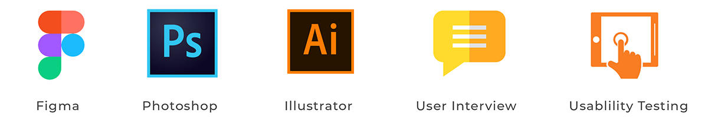

Peep App - Product Design
PEEP is a programmatic advertising solution that enables advertisers & brands connect directly with their target audience. Leveraging on unique technology, users get rewarded for viewing and engaging with content from their favorite brands and publishers.
The Problem
1. Ad Traffic but no conversions: By 2020, 63% of all digital will be programmatic.
2. Banner Blindness: According to a study by Infolinks, 86% of consumers suffer from banner blindness.
3. Mobile Ad fraud: According to a recent study, advertisers lost around $7.2 million globally as at 2016 to mobile fraud.
My Role
I led the Product Design - User Experience (UX) and User Interface (UI) - of this project as well as utilizing constructive feedback from team members and user research for optimization of design.
Design Toolkit

Design Process
The first step of the design process involved user interviews and secondary research to understand how competitors and users behave. I believe it’s important to get this information in the initial stages of the process, before having an idea or prototyping.
After analysing this insights, I began to conceptualize the solution, focusing on user flows and wireframe to give me a way to iterate faster through ideas. From this, From this, I went to the production mode, designing the interface considering design principles such as contrast, hierarchy and feedback; brand attributes; user interactions, and information architecture.
{kind=link}
User Interview
My team and I conducted secondary research on competition and then proceeded to conduct user research. We did this by setting up focus groups of university students who were our potential target market. After gathering the data we proceeded to analysis by creating user journey maps, scenario map and business model. The major topics covered in our user research were:
- - Mobile phone habits
- - Process of engqagement with ads
- - Incentivisation for watching ads
{kind=link}
Insights
After analysing the interviews, this was the most relevant information for decision-making in creating the solution:
- - 90% of time spent on phone is on social media
- - Mobile Data and Call Credit are very expensive
- - Users struggle to keep up with engagement with brand ads
We proceeded to the ideation phase by constructing the user flow diagram for each user to illustrate their potential experience on the app.
{kind=link}
Wireframe
I focused on designing out the ux patterns and templates for each mobile screen using the wireframing tool Balsamiq. I collaborated with the team to draw out the flow of the app from the perspective of the user.
{kind=link}
Solution
Through PEEP’s unique second screen (lockscreen) functionality, brands can now rise above all the clutter as users view and interact with your brand’s message first. Guaranteed rewards also incentivize the attention of the target audience.
Call to Actions are easy to create, but hard to make customers follow through. Through PEEP’s unique first to view and incentive driven features, brands can increase conversions on their CTAs.
{kind=link}
Key Insights
Initially we created the application with the intention to manage ad campaigns which would then communicate through our API to PEEP app users. However, we conducted testing with a select group of users and discovered it is much more efficient for publishers to have control over the ads and this indicatded we needed to create a service based model of our application so that ad creation is autonomous.
In order to break this down I created process flow diagrams to envision a web app module for our application.
{kind=link}
Information Architecture
At this stage it was important to break down the necessary actions the users will take. I utilized Card sorting as a tool in collaboration with business stakeholders to help me understand how our users view, categorize and label content in order to help me structure the navigation for the application.
{kind=link}
Web App
Below is the high fidelity prototype of what the dashboard for business stakeholders who will be publishing the adverts which would connect with our API to feed content on our mobile app.
{kind=link}
Outcome
This project highlighted the importance of the Software Development Lifecycle Cycle utilizing tools like JIRA for project management and Balsamiq to create wireframes. My team and I successfully deployed the mobile app and our technology got acquired by investors from a top media firm in Nigeria for $552,000 vested over 3 years.